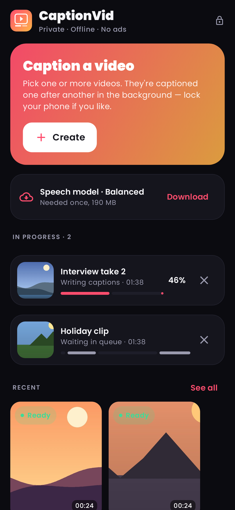
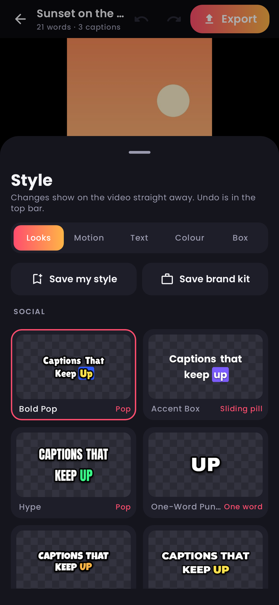
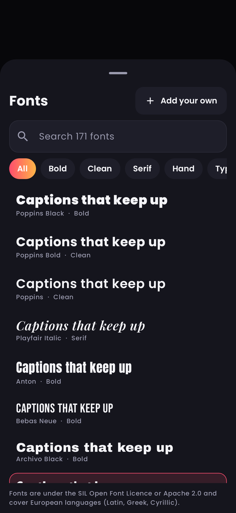
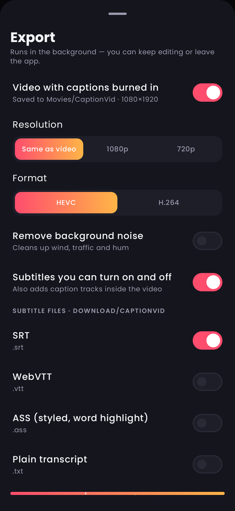
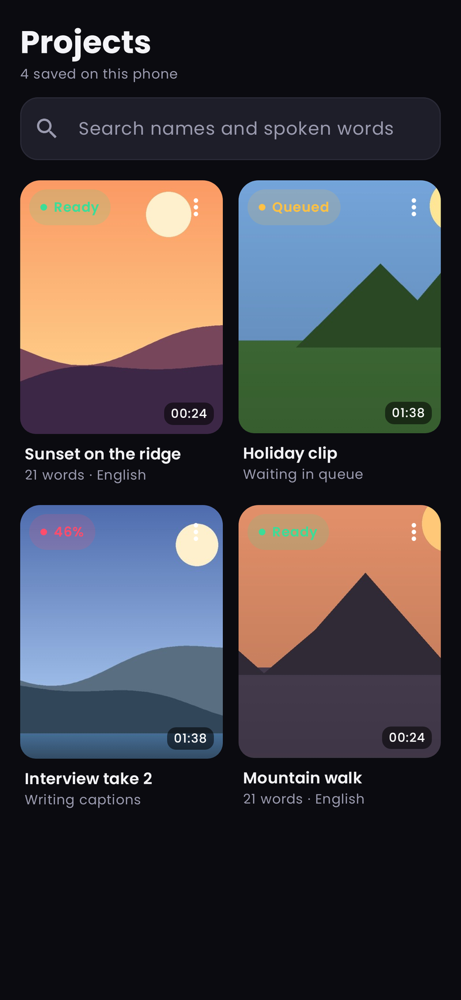
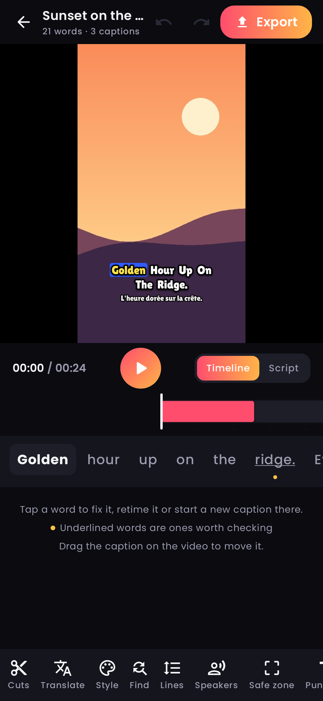
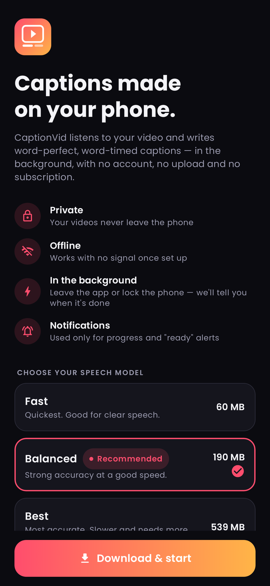
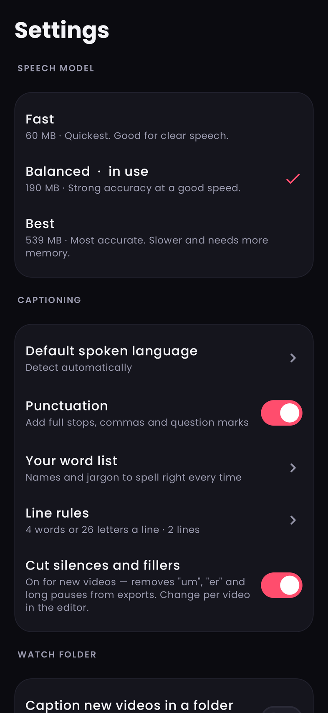
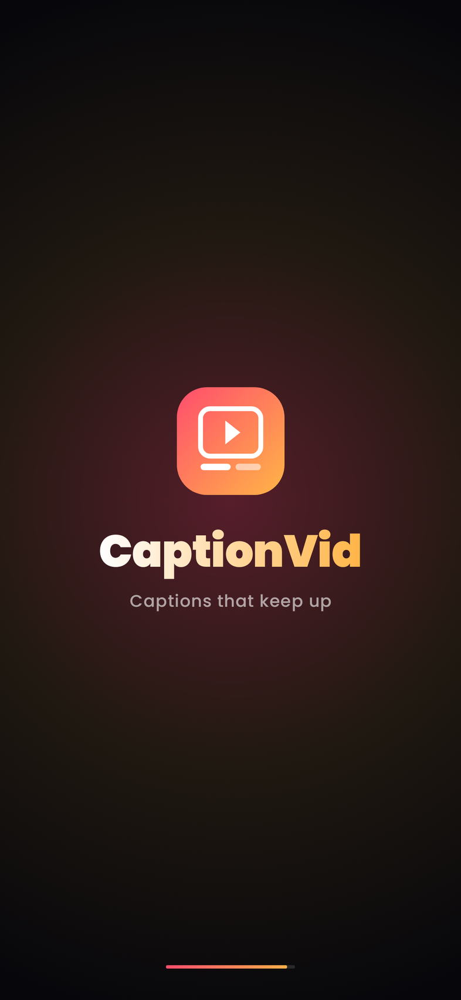

Every word. Perfectly timed.
CaptionVid listens to your video and writes the captions word by word, on your phone. Pick one video or twenty, lock the screen, and they are captioned one after another in the background.
Then make them yours: fix any word with a tap, choose from 45 animated looks and 171 fonts, cut the ums and long pauses, translate into European languages and export the finished video with the captions burned in, or as subtitle files. Your videos never leave the phone.
Download for AndroidHow to install
- Version 1.0.3
- Android 10 or later
- 30.8 MB
Free, with nothing to unlock. No adverts, no account with the developer, no tracking. Compare or read the release notes.
Chrome may say the file might be harmful. It shows this for app files that do not come from Google Play. Choose Download anyway.
- No uploadSpeech recognition runs on your phone.
- No accountOpen it and start.
- No advertsNone in the app and none on this site.
- Nothing to buyEvery look, font and export is free, with no watermark.
A look inside
These are the real screens, drawn from the app's own code with a made-up video. Swipe or scroll sideways to see them all.









How it works
CaptionVid uses a speech recognition engine that runs on the phone itself. Your video is read where it is; nothing is uploaded anywhere.
Pick
Choose videos from your phone, share them to CaptionVid from another app, or record one with the built-in teleprompter.
Caption
Each video is captioned word by word in the background, even with the screen off. You get a notice when it is ready.
Polish and export
Fix words, choose a look, cut pauses or translate, then export the finished video to Movies/CaptionVid or save subtitle files.
Everything is in, and all of it is free
Nothing below is held back for a paid tier, because there is no paid tier.
Captions
- Word-by-word timing
- Every word has its own start and end, so captions highlight, pop and bounce exactly as you speak.
- Your word list
- Names, places and jargon spelled right every time.
- Line rules
- Choose words or letters per line and one, two or three lines. Captions break at natural pauses.
- Many spoken languages
- Detects the language for you, or set it yourself. Words worth checking are underlined.
Looks
- 45 animated looks
- Pop, karaoke fill, sliding pill, one word at a time, typewriter, glow and more, each fully changeable.
- 171 fonts
- Bold display, clean sans, serif, handwritten and more, covering Latin, Greek and Cyrillic, plus your own fonts.
- Brand kits
- Save your colours, font and look once and use them on every new video.
- Safe zones
- Guides for the buttons that cover the edges of short-video apps, so captions stay clear.
Editing
- Cut silences and fillers
- Removes ums, ers and long pauses from the export. On by default, changeable for each video.
- Translate
- A second line or a full translation into 34 European languages, translated on the phone.
- Speakers
- Optional speaker detection gives each voice its own caption colour.
- Undo and redo
- Every change can be undone, and nothing touches your original video.
Export
- Burned-in captions
- At the video's own size, up to 4K, or 1080p and 720p, in HEVC or H.264, with no watermark.
- Subtitle files
- SRT, WebVTT, ASS with word highlighting, and a plain transcript.
- Subtitles you can switch off
- Caption tracks inside the video file that players can turn on and off.
- Background noise removal
- Cleans up wind, traffic and hum in the exported sound.
Working in the background
- A queue
- Add as many videos as you like; they are captioned one after another.
- Share to CaptionVid
- Send a video from your gallery or another app straight into the queue.
- Watch folder
- Choose a folder and new videos in it are captioned by themselves, by default only while charging.
- Record with a teleprompter
- Read your script on screen as you film, then caption it straight away.
Private by design
Your videos stay on your phone
Speech recognition and translation run on the phone. No video, sound or caption is uploaded anywhere.
No account, no tracking
There is no sign-in, no analytics and no advertising.
Online only when needed
To download the speech model once, translation languages once, and when you tap Check for updates.
Installing and updating
CaptionVid is not on Google Play, so your phone asks a couple of extra questions the first time.
Download the app file
Tap Download on your phone. The file is called CaptionVid.apk and is about 30.8 MB. If Chrome says the file might be harmful, choose Download anyway.
Allow the install
Open the file. The first time, Android asks you to allow your browser to install apps. Allow it, go back and tap Install. If Google Play Protect steps in, choose More details, then Install anyway.
Updating later
Settings, About, Check for updates asks GitHub for the newest version only when you tap it, and offers the download. Install the new file over the old one: do not uninstall first, or your projects and looks are lost.
Version 1.0.3, released 26 November 2026. See the release notes, or check your download.
Questions
Is CaptionVid really free?
Yes. There is no paid version, no subscription, no adverts and no watermark. Every look, font and export option is in the free app.
Is it on Google Play?
No. CaptionVid is a personal project and is downloaded from this site as an Android app file. It needs Android 10 or later and a phone with a 64-bit processor, which almost every phone from the last few years has.
Do my videos get uploaded?
No. The speech recognition engine runs on your phone, so your videos, their sound and their captions stay on it.
Does it need the internet?
Only to download the speech model the first time (about 190 MB for the recommended Balanced model) and each translation language the first time (about 30 MB each). After that, captioning works with no connection.
How accurate is it?
Very good with clear speech. Choose Best in Settings for the most accurate captions, or Fast for older phones. Words the engine was unsure of are underlined so you can check them, and your word list fixes names for good.
Which languages can it caption?
It recognises speech in many languages and can detect which one is spoken. Translation is into 34 European languages and needs Google Play services on the phone.
How long does it take?
It depends on the phone, the length of the video and the speech model you choose: Fast is quickest, Best is slowest. It carries on with the screen off and tells you when each video is ready.
Does it change my original video?
No. CaptionVid reads your video where it is and saves the captioned copy in Movies/CaptionVid.
What is the watch folder?
An optional setting. Choose a folder, and any new video saved there is captioned by itself, by default only while the phone is charging, such as overnight. If Android does not allow it to start on its own, a notice asks you to tap to carry on.
How do I update it?
Settings, About, Check for updates. Download CaptionVid.apk and install it over the old one. Do not uninstall first.
Who made it?
CaptionVid is made by Jonathan Jackson, an independent developer in the United Kingdom.
Caption your next video
Free, with no adverts and nothing to unlock. Made by the developer of several other free Android apps: see them all.